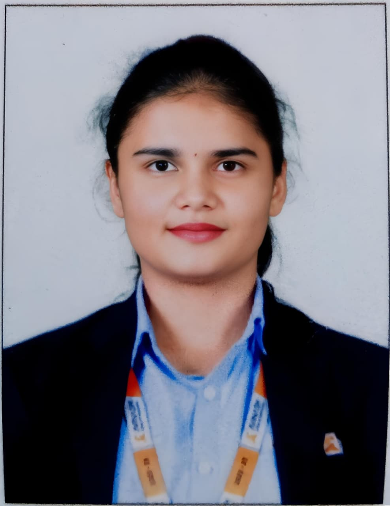
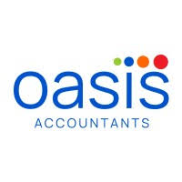

I am a highly motivated and detail-oriented finance professional, currently pursuing the ACCA qualification alongside an MBA, with a strong academic foundation in commerce and accounting. I have developed practical expertise in financial reporting, bookkeeping, and data analysis through both academic projects and hands-on internship experience.
During my internship as an Associate Accountant, I gained real-world exposure to accounting systems, financial data handling, and reconciliation processes, where I consistently ensured accuracy and efficiency in financial records. I am proficient in tools such as Microsoft Excel, Tally, and data management techniques including CSV handling and reporting.
I am passionate about leveraging financial insights to support business decision-making and continuously enhancing my skills in finance, analytics, and business strategy. I am actively seeking opportunities where I can contribute, learn, and grow within a dynamic and professional environment.
Vignana Bharathi Institute of Technology (VBIT), Hyderabad
CGPA: 8.89 | Avinash College of Commerce, Hyderabad
90% | Avinash College of Commerce, Hyderabad
GPA: 10 | Nava Jyothi High School, Hyderabad

Oasis Accountants, Hyderabad
Dec 2025 – Feb 2026
Completed a 3-month internship where I supported core accounting operations including bookkeeping, financial record maintenance, and data handling. Worked extensively with Microsoft Excel and Word to prepare reports and maintain structured documentation.
Managed and analyzed CSV files, performed data entry, and assisted in reconciliation processes to ensure data accuracy and consistency. Gained practical exposure to accounting tools and real-world financial workflows, contributing to improved efficiency and organized reporting.
Conducted a research study involving 118 respondents to analyze financial literacy levels and their influence on financial decision-making. Identified trends in investment behavior and highlighted the importance of financial education and institutional trust in shaping the financial ecosystem.
eshas0624@gmail.com
+91 8125130913